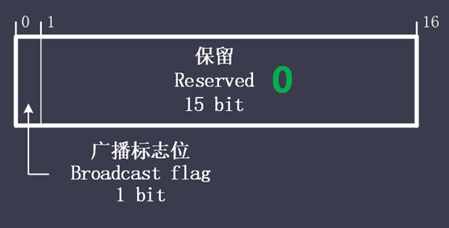

<!DOCTYPE html>
<html lang="zh">
<head>
	<meta charset="UTF-8">
	<meta http-equiv="X-UA-Compatible" content="IE=edge,chrome=1">
	<title>协议-DHCPv4</title>
	<script type="text/javascript" src="../../../js/public/head.js"></script>
	<script type="text/javascript">
		window.onload = createNavigation(dhcpv4);
		document.onmouseup = function () {
			document.onmousemove = null;
		};
	</script>
	<link rel="stylesheet" type="text/css" href="../../../css/private/protocol/dhcpv4.css">
</head>
<body>
	<div class="container-fluid">
		<div class="divProtocolWord">
			<script type="text/javascript">
				createProtocolWord(
					"DHCPv4",
					"Dynamic Host Configuration Protocol version 4",
					"动态主机配置协议第四版",
				);
			</script>
		</div><br />

		<div id="divCommand">
			<script type="text/javascript">
				createInstruT0("简单的DHCP报文交互过程（无异常）<br />","i1");
					createConfigImgT0("DHCPv4/DHCP交互过程", "简单的DHCPv4交互过程");

					createInstruAllTopT0("1、客户端发送DHCP discover（广播），向广播域内DHCP服务器请求IP地址（及其它信息）");

					createInstruAllTopT0("2、DHCP服务器DHCP offer（广播），向客户端响应IP地址（及其它信息）");

					createInstruAllTopT0("3、因为广播域内可能有多个DHCP服务器，因此客户端可能收到多个offer，<br />　　&nbsp;客户端一般会选项收到第一个offer的服务器，使用它提供的IP地址（及其它信息），<br />　　&nbsp;客户端发送request报文（广播），通告所选择的服务器，同时通告其它服务器，不使用其的地址，将地址回收");

					createInstruAllTopT0("4、被选择的DHCP服务器发送ack（广播），确认此事");

					createInstruAllTopT0("5、客户端发送免费ARP（广播），检测地址冲突，如无冲突，正式使用获得的地址");

					createInstruAllTopT0("6、T1（租期的50%）到期后，客户端向DHCP服务器发送request（单播），进行地址续租");

					createInstruAllTopT0("7、DHCP服务器发送ack（单播），确认续租");

					createInstruAllTopT0("之后每次到达T1时，均进行续租，正常续租后，地址可一直使用");

				createInstruT0("DHCP端状态迁移图<br />","i2");
					createConfigImgT1("DHCPv4/DHCP端状态迁移图", "DHCPv4端状态迁移图");

				createInstruT0("DHCP协议结构","i3");
						createProtocolStructT1(
							"1000",
							"860",
							"15480",
							"DHCPv4/DHCP",
							"DHCPv4协议"
						);

					words = `
						操作码（Operation）
						由8 bit构成，表示报文的类型<br />　1：客户端请求报文<br />　2：服务器响应报文

						硬件类型（Hardware Type）
						由8 bit构成，表示硬件地址的类型，对于以太网，值为1

						硬件地址长度（Hardware Address Length）
						由8 bit构成，表示硬件地址的长度，单位是字节，对于以太网，值为6

						跳数（Hop）
						由8 bit构成，表示跳数，客户端设置为0，如果发生DHCP中继，则被中继服务器设置为1

						事务编号（Transaction ID）
						由32 bit构成，表示事务ID，在一次完整的请求响应过程中（如：discover->…->ack）保持不变

						秒数（Seconds）
						由16 bit构成，表示从客户端开始获得IP地址或IP地址续借后所使用了的秒数。

						标志（Flags）
						由16 bit构成，在DHCP中表示标志字段，仅最高位使用，其它位保留为0<br /><br />　最高位为0：客户端请求服务器以 单播 形式发送响应报文<br />　最高位为1：客户端请求服务器以 广播 形式发送响应报文

						客户端地址（Client IP Address）
						由32 bit构成，客户端的IP地址。只有客户端是 绑定、更新、重新绑定 状态，并且能响应ARP请求时，才能被填充。

						你的地址（Your（client） IP Address）
						由32 bit构成，表示DHCP服务器向客户端提供的地址

						下一个服务器地址（Next Server IP Address）
						由32 bit构成，表示DHCP协议流程的下一个阶段要使用的服务器的IP地址

						中继代理地址（Relay agent IP Address）
						由32 bit构成，如果发生DHCP中继，则为中继代理地址，无中继，则为0

						客户端硬件地址（Client Hardware Address）
						由128 byte构成，表示客户端的硬件地址，对于以太网，为客户端的mac地址，其余位填充0

						服务器名（Server Host Name）
						由64 byte构成，表示客户端获取配置信息的服务器名字，是可选的，如果填写，必须是一个以0结尾的字符串。

						引导文件名（Boot File Name）
						由128 byte构成，表示客户端的启动配置文件名，是可选的，如果填写，必须是一个以0结尾的字符串

						DHCP Magic Cookie
						由32 bit构成，固定值 0x63825363，出现此字段表示为DHCP报文，与BOOTP报文进行区分

						选项（Options）
						长度可变，为DHCP选项的相关内容
					`;
					createProtocolExplainT0(words, -860);

					createInstruT0("DHCP选项","i4");
						createInstruT1("DHCP选项结构","i4-1");
							createProtocolStructT1(
								"780",
								"170",
								"850",
								"DHCPv4/option",
								"DHCPv4选项",
								"dhcp_option"
							);

							words = `
								选项编号（Option Code）
								由8 bit构成，表示选项的的类型

								选项长度（Option Length）
								由8 bit构成，表示选项的内容长度，单位 字节

								选项内容（Hardware Type）
								长度可变，与选项类型相关

							`;
							createProtocolExplainT1(words, -170, "dhcp_option");

						createInstruT1("重要选项介绍","i4-2");
							createInstruT2("Message Type(53)","i4-2-1");
								createInstruAllTopT2("确定DHCP报文类型的选项，选项内容为报文类型对应的编号，对应关系如下：<br />");

								tHeader = [
									"报文<br />类型",
									"Message<br />Type",
									"说明",
								];
								tBody = [
									["discover","1","因为DHCP客户端在请求IP地址时并不知道DHCP服务器的位置，因此DHCP客户端会在本地网络以广播方式发送discover请求报文，以发现网络中的DHCP服务器，所有收到discover报文的DHCP服务器都会发送应答报文。"],
									["offer","2","DHCP服务器收到discover报文后，就会在所配置的地址中查找一个合适的IP地址，加上相应的租约期限和其它配置信息，构造一个offer报文，发送给DHCP客户端，告知用户本服务器可以为其提供的IP地址，但这个报文只是告诉DHCP客户端可以提供IP地址，最终还需要客户端检测该IP地址是否重复。"],
									["request","3","DHCP客户端可能会收到很多offer请求报文，所以必须在这些应答中选择一个。通常是选择第一个offer应该报文的服务器作为自己的目标服务器，并向该服务器发送一个广播的request请求报文，通告选择的服务器，希望获得所分配的IP地址。<br />DHCP客户端在成功获取IP地址后，在地址使用租期过去1/2，也会向DHCP服务器发送单播request请求报文请求续期，发果没有收到ack报文，在租期过去7/8时，会再次发送广播的request请求报文以请求续延租约"],
									["ack","5","DHCP服务器发到request请求报文后，根据request报文中携带的用户mac地址来查找有没有相应的租约记录，如果有则发送ack应答报文，通知用户可以使用分配的IP地址"],
									["nak","6","如果DHCP服务器收到request请求报文后，没有发现有相应的租约记录或者由于某些原因无法正常分配IP地址，则向DHCP客户端发送NAK应答报文，通知用户无法分配合适的IP地址"],
									["release","7","当DHCP客户端不再需要使用分配IP地址时，就会主动向DHCP服务器发送release讲求报文，告知服务器用户不同志需要分配IP地址，请求DHCP服务器释放对应的IP地址"],
									["decline","4","DHCP客户端收到服务器ack应答报文后，通过地址冲突检测发现服务器分配的地址冲突或由于其他原因导致不能使用，则会向DHCP服务器发送decline请求报文，通知服务器所分配的IP地址不可用，以期获得新的IP地址"],
								];
								createHLTableT2(1040, tHeader, tBody, "tOption53");

							createInstruT2("<br />Parameter Request List(55)","i4-2-2");
								createInstruAllTopT2("表示需要从DHCP服务器获得的内容，如果没有此选项，则只得到IP地址（无子网掩码）");
								createInstruAllTopT2("每项内容均以长度1字节的编号表示，与DHCP选项编号相同");

						createInstruT1("<br />其它选项介绍","i4-3");
							createInstruAllTopT1("常见的编号编号及内容如下：<br />");

							tHeader = [
								"选项编号",
								"选项内容",
							];
							tBody = [
								["1","子网掩码"],
								["2","默认网关"],
								["6","DNS服务器地址"],
								["51","地址租期"],
							];
							createHLTableT1(350, tHeader, tBody, "tOtherOption");

					createInstruT0("DHCP实例<br />","i5");
						createConfigImgT0("DHCPv4/DHCP_packet$1~7");


			</script>

			<br /><br /><br /><br /><br /><br /><br />
			<br /><br /><br /><br /><br /><br /><br />
		</div>
	</div>
</body>
</html>